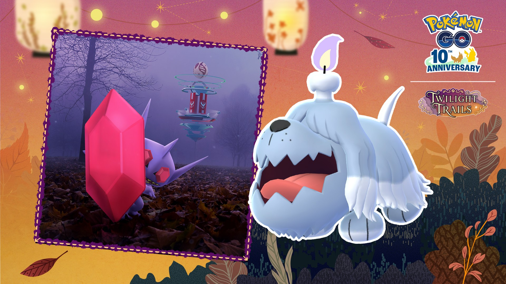
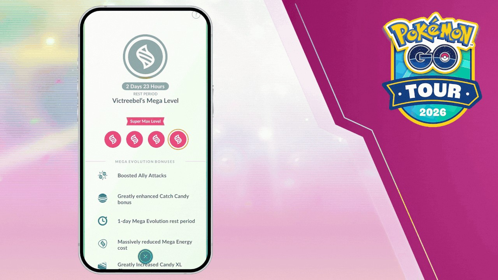

포켓몬 GO 메가깜까미 슈퍼 맥스 레벨, 11월 1일 오전 10시부터 올릴 수 있어요
메가깜까미를 키우다 보면 메가레벨이 더 오를 데가 없는 순간이 오는데요, 핼러윈 2026 파트2부터는 그 위에 한 단계가 새로 열려요. 한국시간 11월 1일 일요일 오전 10시에 시작해서 11월 5일 목요일 오후 8시에 끝나는 이 이벤트에서 메가깜까미의 슈퍼 맥스 레벨을 처음으로 올릴 수 있거든요.
저는 이 단계를 어떻게 밟아야 헛걸음이 없을지부터 따져 봤고요, 그래서 시작 시각과 올리는 순서, 내 깜까미가 지금 몇 단계인지 보는 법, 새로 생기는 스페셜 어택 나이트헤드+ 위력, 메가 에너지, 11월 1일 당일 순서 순으로 풀어 볼게요 ㅎㅎ 파트1(해트와 케이프 피카츄) 이야기는 맨 아래 같이 보기에 글을 걸어 뒀으니 여기서는 깜까미만 다뤄요. 아래 내용은 10월 20일 공식 공지 기준이에요.

왼쪽 안개 낀 사진 속에 큰 붉은 보석을 앞세운 깜까미가 보여요.
출처: Pokémon GO 공식 공지 / Niantic (pokemongo.com)
메가깜까미 슈퍼 맥스 레벨은 언제부터 올릴 수 있나요?
메가깜까미의 슈퍼 맥스 레벨은 핼러윈 2026 파트2가 열리는 한국시간 11월 1일 일요일 오전 10시부터 올릴 수 있습니다. 공지에는 이 이벤트부터 포켓몬 GO에서 처음으로 메가깜까미의 메가레벨을 슈퍼 맥스까지 올릴 수 있다고 적혀 있습니다. 이 글은 공지의 시작 시각을 기준으로 적었어요.
| 구분 | 일시(한국 시간 기준) |
|---|---|
| 파트2 시작, 메가깜까미 슈퍼 맥스 레벨 첫 적용 | 11월 1일(일) 오전 10시 |
| 파트2 종료 | 11월 5일(목) 오후 8시 |
슈퍼 맥스 레벨은 어떤 순서로 올리나요?
슈퍼 맥스 레벨은 3단계인 맥스 레벨까지 먼저 올려 둔 뒤, 그 포켓몬의 메가 에너지를 써서 강화하는 순서로 올립니다. 공지 표현대로면 맥스 레벨이 메가레벨의 세 번째 칸이고 슈퍼 맥스는 그 위에 새로 얹힌 네 번째 칸이라서, 중간 단계를 건너뛰는 길은 없어요. 그래서 순서가 꼬이기 쉬운 지점을 세 가지로 뽑아 봤어요.
이런 데서 순서가 꼬이기 쉬워요
- 메가진화를 거듭하면 슈퍼 맥스까지 저절로 오를 거라고 보는 것: 공지는 메가진화만으로는 올릴 수 없다고 못 박았어요.
- 맥스 레벨 전인데 슈퍼 맥스 강화부터 찾는 것: 맥스 레벨이 먼저 갖춰져야 하는 조건이에요.
- 다른 포켓몬의 메가 에너지로 깜까미를 채우려는 것: 공지가 해당 포켓몬의 메가 에너지라고 적었어요.
지금 내 깜까미가 몇 단계인지 어떻게 보나요?
내 깜까미가 3단계 맥스 레벨에 와 있는지는 메가레벨 화면에서 현재 단계를 보면 바로 알 수 있어요. 아래 화면은 공식 공지에 실린 메가우츠보트의 예시인데, 동그라미 네 개가 한 줄로 놓이고 위쪽 띠에 슈퍼 맥스 레벨이 적혀 있는 구성이 보이시죠.

메가우츠보트의 메가레벨 화면 예시예요(영어 화면). 화면 속 보너스 목록은 메가우츠보트 몫이에요.
출처: Pokémon GO 공식 공지 / Niantic (pokemongo.com)
공지는 지금까지 메가레벨이 3단계였고 맨 끝이 맥스 레벨이라고 적었는데, 1단계와 2단계를 뭐라고 부르는지는 따로 적지 않았어요. 이 글에서는 '1단계·2단계·3단계(맥스)'로만 부를게요.
내 깜까미 상황별로 이렇게 갈려요
· 이미 맥스 레벨이라면: 11월 1일 오전 10시 이후에 메가 에너지로 바로 슈퍼 맥스 강화를 하면 돼요. 슈퍼 맥스가 맥스 레벨 바로 다음 칸이라서요.
· 맥스 레벨 전이라면: 10시를 기다리기보다 맥스 레벨까지 올리는 쪽이 먼저예요. 슈퍼 맥스는 맥스를 거쳐야만 갈 수 있게 정해져 있으니까요.
내 깜까미가 지금 몇 단계인지 이 화면 하나로 보여요.
제 메가깜까미는 지금 〔맥스 레벨까지 올라 있어요 / 맥스 레벨 전 단계예요 / 아직 메가진화를 시켜 본 적이 없어요〕.
나이트헤드+는 어떤 스페셜 어택인가요?
나이트헤드+는 메가진화한 깜까미가 추가로 쓸 수 있는 스페셜 어택이고, 위력은 트레이너 배틀 55, 레이드배틀 160이에요. 공지는 메가레벨이 오르면 이 공격의 위력도 같이 오른다고 설명하는데요, 슈퍼 맥스도 메가레벨의 한 칸이니 슈퍼 맥스까지 올렸을 때 얼마가 되는지가 궁금해지죠. 다만 공지에 적힌 55와 160이 어느 메가레벨 기준인지, 올랐을 때 얼마가 되는지는 숫자가 따로 없어요.
참고로 이 스페셜 어택은 깜까미만의 이야기가 아니라, 슈퍼 맥스 레벨을 올릴 수 있는 포켓몬이 메가진화 중에 스페셜 어택을 하나 더 배우는 구조의 일부예요. 해외 팬 사이트 Pokémon GO Hub 정리로는 나이트헤드+가 고스트 타입 기술이라고 합니다(출처).
나이트헤드+가 목록에 들어와 있는 모습이에요.
슈퍼 맥스로 올리면 CP와 보너스는 어떻게 달라지나요?
슈퍼 맥스로 올리면 CP가 크게 늘고, 포획 보너스와 재메가진화 휴식시간에도 변화가 붙는다고 2월 공식 안내에 나와 있어요. 세 가지를 풀면 이래요.
- CP: 대폭 증가
- 같은 타입의 포켓몬을 잡을 때: 그 포켓몬의 사탕, XP, 사탕XL이 대폭 증가
- 메가 에너지 없이 다시 메가진화할 때의 휴식시간: 24시간으로 감소
이건 슈퍼 맥스 레벨 전체에 공통으로 적힌 안내라서, 메가깜까미 CP가 정확히 얼마나 오르는지와 포획 보너스가 몇 배인지는 공개된 숫자가 없어요. 포획 보너스는 같은 타입이 기준인데 메가깜까미의 타입도 공식 공지에는 적혀 있지 않아서, 어떤 포켓몬을 잡을 때 보너스가 붙는지는 아직 알 수 없어요.
메가 에너지 필요량과 얻는 경로는 공식 공지에 나와 있나요?
깜까미의 슈퍼 맥스 강화에 드는 메가 에너지 양과 얻는 경로는 공식 공지에 적혀 있지 않습니다. 공지가 분명히 적은 건 해당 포켓몬의 메가 에너지로 강화한다는 데까지예요. 다만 공식 공지 화면 예시를 보면 필요한 메가 에너지 수는 메가레벨 화면의 LEVEL UP 버튼 옆(영어 화면 기준)에 뜨고, 슈퍼 맥스로 올릴지 묻는 확인 창에는 숫자가 없어요. 내가 가진 메가 에너지는 인게임에서 보유량을 확인할 수 있고요. 파트2 기간에 메가깜까미 메가 레이드가 열리는지도 공식 공지에는 없어요.
- 메가깜까미의 타입
- 슈퍼 맥스 강화에 필요한 깜까미 메가 에너지 수(메가레벨 화면의 LEVEL UP 버튼 옆)
- 깜까미 메가 에너지를 모으는 경로
- 파트2 기간 메가깜까미 메가 레이드 편성 여부
- 슈퍼 맥스 깜까미의 실제 CP·포획 보너스 수치
- 메가레벨 1·2단계의 인게임 표기 이름
깜까미 메가 에너지가 얼마나 있는지 한눈에 보여요.
제 깜까미 메가 에너지는 〔넉넉한 편이에요 / 조금 모자라요 / 거의 없어요〕.
11월 1일 당일에는 어떤 순서로 확인하면 되나요?
11월 1일 오전 10시 이후에는 깜까미 메가 에너지 보유량, 맥스 레벨 도달 여부, 필요량과 슈퍼 맥스 확인 창 순으로 보면 헛걸음이 없어요.
| 순서 | 볼 곳 | 이유 |
|---|---|---|
| 1 | 깜까미 메가 에너지 보유량 | 이어서 볼 필요량과 바로 맞대 볼 수 있어요 |
| 2 | 메가레벨 화면의 현재 단계 | 슈퍼 맥스는 맥스 레벨 다음 단계라서, 맥스 전이면 강화 창은 아직이고 맥스 레벨 올리기부터예요 |
| 3 | LEVEL UP 버튼 옆 필요량, 이어서 슈퍼 맥스 확인 창 | 필요한 메가 에너지 수는 버튼 옆에 뜨고, 확인 창은 숫자 없이 올릴지만 묻는 창이에요 |
LEVEL UP 버튼을 누르기 직전 화면이에요.
자주 묻는 질문
Q. 슈퍼 맥스 레벨은 이번에 처음 나온 건가요?
시스템은 아니에요. 2월 'Pokémon GO Tour: 칼로스지방'에서 먼저 소개됐고, 그때는 메가우츠보트와 메가칼라마네로가 등장하자마자 슈퍼 맥스까지 올릴 수 있었어요. 파트2는 메가깜까미 차례라서 깜까미로는 이번이 첫 적용이랍니다.
Q. 나이트헤드+를 쓰려면 슈퍼 맥스까지 올려야 하나요?
공지 문장에는 그런 조건이 따로 붙어 있지 않고 메가진화한 상태라는 점만 적혀 있어요. 위력이 메가레벨을 따라 오른다는 설명이 있으니, 슈퍼 맥스는 쓸 수 있는 기술을 열어 주는 열쇠라기보다 위력을 더 끌어올리는 쪽으로 읽으시면 돼요.
저라면 11월 1일이 오기 전에 내 깜까미가 어디까지 와 있는지부터 볼 것 같아요. 슈퍼 맥스는 맥스 레벨부터 채워야 열리는 칸이거든요. 헛걸음만 줄여도 당일이 훨씬 편하겠네요. 메가깜까미 슈퍼 맥스까지 다들 무사히 올리시길 바랄게요~
✔ 포켓몬 GO 같이 보기 좋은 내용
· 포켓몬GO FC서울 이벤트 정리 10월 24일 토요일 9시~20시, 야생 6종 파이리 레이드 시간제한 리서치 보상
· 포켓몬고 핼러윈 2026 파트1 해트와 케이프 피카츄 만나는 법, 10월 27일 별1 레이드와 GO패스 보너스
· 포켓몬고 디아루가 레이드 약점 정리, 추천 카운터와 졸업스킬 포획 팁까지
참고한 곳 (2026.10.20 기준)
· 포켓몬 GO 공식 뉴스 — 핼러윈 2026 파트2
· 포켓몬 GO 공식 뉴스 — 메가진화 2026 업데이트
· Pokémon GO 공식 뉴스(영문) — Halloween Part 2
· Pokémon GO Hub — Halloween 2026 Part Two